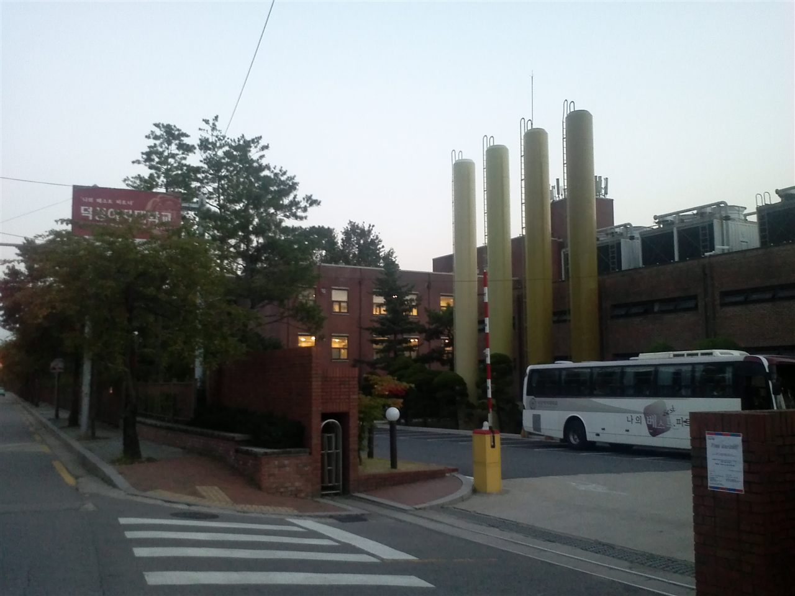

덕성여자대학교는 서울특별시 도봉구에 있는 사립 여자대학입니다. 1920년 차미리사 선생이 세운 근화학원을 모태로 하고, 1952년에 4년제 대학이 되었습니다. 도봉구 본교 외에 종로 캠퍼스도 함께 운영합니다. 서울 경전철 우이신설선에 ‘4.19민주묘지(덕성여자대학)’역이 있는, 서울 북부의 캠퍼스입니다.
2027학년도 수시 원서접수는 2026년 9월 7일 오후 2시부터 9월 11일 오후 6시까지로 안내돼 이미 마감됐습니다. 그래서 오늘 이 글을 읽으실 분은 대부분 고1·고2 학부모님이실 것입니다. 경쟁률 이야기보다 이 대학의 전형이 어떻게 생겼는지를 보는 편이 지금은 훨씬 쓸모가 있습니다. 구조를 알면 남은 1~2년에 무엇을 쌓을지가 정해지기 때문입니다.
수시로 862명, 전형은 12개로 나뉩니다
2027학년도 덕성여자대학교의 수시 모집 규모는 862명으로 발표됐습니다. 이 인원을 12개 전형에 나눠 담았습니다. 보도된 내용을 큰 갈래로 정리하면 이렇습니다.
- 학생부종합 — 덕성인재전형Ⅰ 115명, 덕성인재전형Ⅱ 240명, 기회균형전형Ⅱ(사회통합) 15명. 여기에 정원 외 선발을 더해 갈래 전체가 501명으로 안내됐습니다.
- 학생부교과 — 고교추천전형 145명, 기회균형전형Ⅰ(사회통합) 25명. 갈래 전체 170명.
- 논술 — 120명
- 미술실기 — 71명
숫자를 보면 이 대학의 성격이 한눈에 드러납니다. 수시의 절반이 넘는 자리가 학생부종합입니다. 교과 성적만으로 가는 길은 170명으로 상대적으로 좁고, 대신 학생부를 읽어서 뽑는 자리가 넓습니다. 그리고 전형이 12개로 쪼개져 있다는 것은 지원자 상황에 따라 들어갈 문이 여러 개라는 뜻이기도 합니다.
수능최저가 걸리는 쪽과 안 걸리는 쪽이 정확히 갈립니다
이 대학에서 가장 먼저 알아 두실 것이 이것입니다. 수능최저학력기준이 전형 갈래에 따라 깔끔하게 갈립니다.
- 학생부교과(고교추천전형)와 논술전형 — 수능최저를 적용합니다.
- 학생부종합(덕성인재전형) — 수능최저를 적용하지 않습니다.
기준은 계열에 따라 두 가지로 안내됐습니다.
- 글로벌융합대학·과학기술대학·미래인재대학 — 국어·수학·영어·탐구(상위 1과목) 중 2개 영역 등급 합 7 이내. 글로벌융합대학은 영어 영역을 제2외국어·한문으로 대체할 수 있다고 안내됐습니다.
- 약학대학 — 수학을 포함한 3개 영역 등급 합 5 이내. 약대 기준에서는 영어와 사회탐구를 상위 1개 영역만 반영한다고 안내됐습니다.
‘2개 영역 합 7’은 두 과목 평균이 3등급 중후반이면 닿는 수준입니다. 아주 높은 문턱은 아니지만, 수능을 아예 놓은 학생에게는 닿지 않는 기준입니다. 해마다 내신은 충분한데 최저를 못 맞춰 떨어지는 지원자가 나오는 자리가 여기입니다.
약대 기준은 성격이 완전히 다릅니다. 수학이 반드시 들어가야 하고, 3개 영역 합 5는 평균 1~2등급대를 요구합니다. 약대를 생각하는 가정이라면 고1부터 수학을 손에서 놓을 수 없다는 뜻이고, 이 한 줄이 사실상 준비 계획 전체를 결정합니다.
반대로 학생부종합 쪽을 보실 가정에게는 다른 메시지가 됩니다. 수시의 가장 넓은 자리가 수능 성적과 무관하게 열려 있습니다. 그만큼 학교생활기록부 하나에 걸리는 무게가 커집니다.
덕성인재전형Ⅰ과 Ⅱ는 뽑는 방식이 다릅니다
학생부종합이 가장 큰 갈래이니 안을 조금 더 들여다보겠습니다. 같은 ‘덕성인재전형’인데 Ⅰ과 Ⅱ가 따로 있고, 인원도 115명과 240명으로 다릅니다.
보도된 내용에 따르면 단계별로 뽑는 전형은 덕성인재전형Ⅱ입니다. 1단계에서 서류평가 100%로 모집인원의 3~4배수를 추리고, 2단계에서 1단계 성적 60% + 면접 40%로 최종 합격자를 가립니다. 면접은 제출 서류를 바탕으로 10분 내외로 진행된다고 안내됐습니다. 기회균형전형Ⅰ의 장애인 등 대상자 전형도 같은 단계별 구조로, 1단계 3배수를 추립니다.
이 안내에 덕성인재전형Ⅰ은 단계별 전형 목록에 들어 있지 않습니다. 다만 Ⅰ의 구체적인 선발 방법과 반영 비율은 확인하지 못해 이 글에 적지 않았습니다. 지원을 염두에 두신다면 이 부분은 모집요강에서 직접 확인하셔야 합니다.
그래도 고1·고2 가정에서 지금 쓸 수 있는 결론은 분명합니다. 면접이 있는 전형이 더 큽니다. 240명 쪽이 면접을 봅니다. 그런데 ‘서류 기반 10분 면접’은 학원에서 연습하는 토론식 면접과 다릅니다. 학생부에 적힌 활동을 두고 “이건 왜 했나요, 뭐가 어려웠나요”를 묻는 자리입니다. 그래서 준비가 따로 있지 않습니다. 자기가 한 일을 자기 말로 설명할 수 있으면 됩니다. 반대로 남이 써 준 활동, 이유를 모르고 참여한 활동은 이 10분에서 바로 드러납니다.
고교추천전형 145명 — 진로선택과목이 10% 들어갑니다
교과 성적으로 가는 대표 전형은 고교추천전형(145명)입니다. 이름 그대로 학교장추천이 필요한 전형입니다. 추천 인원은 학교마다 한정되므로, 지원 자격이 교내에서 먼저 결정됩니다. 이 전형을 생각하신다면 고3 봄이 아니라 고1·고2 내신에서 승부가 난다고 보시는 편이 맞습니다.
성적 산출 방식에 알아 두실 변화가 있습니다. 교과 성적을 공통·일반선택 90% + 진로선택 10%로 합산한다고 안내됐습니다.
이 10%가 작아 보이지만 실제로는 메시지가 큽니다. 진로선택과목은 석차등급 대신 성취도(A·B·C)로 기재되는 과목이라 “어차피 등급이 안 나오니 대충 들어도 된다”고 생각하는 학생이 많습니다. 이 전형에서는 그 과목이 점수 안에 들어옵니다. 고2·고3에서 과목을 고를 때 진로선택도 성적이 남는 과목이라고 보셔야 합니다.
다만 구체적인 반영 교과와 과목 수, 성취도를 점수로 바꾸는 환산 방식은 확인하지 못해 이 글에 적지 않았습니다. 같은 ‘90+10’이라도 환산표가 어떻게 생겼는지에 따라 유불리가 달라지므로, 이 부분은 모집요강 확인이 꼭 필요합니다.
논술 120명은 논술 100%, 약대까지 포함됩니다
논술전형으로 120명을 선발하고, 반영 비율은 논술고사 100%로 안내됐습니다. 교과 성적이 들어가지 않는다는 뜻입니다. 그리고 이 전형에 약학대학도 포함됩니다.
논술 100%는 수험생 입장에서 양날입니다. 내신이 아쉬운 학생에게 열리는 문이면서, 동시에 하루 시험으로 끝나는 전형입니다. 여기에 수능최저가 걸려 있다는 점을 꼭 같이 보셔야 합니다. 논술을 잘 써도 최저를 못 맞추면 끝입니다. 글로벌융합·과학기술·미래인재 계열은 2개 합 7, 약대는 수학 포함 3개 합 5입니다.
덕성여자대학교는 2027학년도 논술 가이드북을 공개했고, 약학대학 논술에 대해서는 수능최저 변경 내용과 기출 문항을 담은 자료를 따로 냈다고 보도됐습니다. 논술을 고려하는 고2 가정이라면 이 자료가 가장 정확한 출발점입니다. 학원 교재보다 먼저 보셔야 할 것은 대학이 직접 낸 가이드북입니다. 대학마다 논술의 모양이 전혀 다르기 때문입니다.
다만 계열별 논술의 출제 형식과 시간, 문항 수, 배점은 확인하지 못해 이 글에 적지 않았습니다.
지역인재 전형은 없습니다 — 대신 알아 둘 것
지역인재 전형을 찾으시는 가정이 계실 텐데, 덕성여자대학교는 서울 소재 대학이라 지역인재 전형이 없습니다. 지역인재는 비수도권 대학이 그 지역 고등학교 출신 학생을 뽑는 제도입니다. 특히 약학과는 비수도권 대학에서 지역인재 비중이 큰 모집단위라 혼동하기 쉬운데, 서울에 있는 이 대학에는 해당하지 않습니다.
지역인재를 함께 고민하고 계신 가정이라면 기준만 알아 두시면 됩니다. 2027학년도 지역인재 지원 자격은 해당 권역 고등학교에서 전 교육과정(3년)을 이수한 학생이고, 중학교 과정까지 해당 지역에서 다녀야 하는 강화된 요건은 2028학년도부터 적용됩니다. 지방 약대와 서울 약대를 함께 놓고 보실 때 이 한 줄이 기준이 됩니다.
지원 전 체크리스트
- 수능을 어디까지 끌고 갈 것인가. 학생부종합(덕성인재)에는 수능최저가 없지만, 고교추천과 논술에는 있습니다. 어느 쪽을 볼지에 따라 수능 준비의 무게가 달라집니다.
- 약대를 생각하는가. 논술전형 약대 최저는 수학 포함 3개 합 5입니다. 수학이 필수로 들어갑니다.
- 면접을 볼 수 있는가. 가장 큰 전형인 덕성인재전형Ⅱ(240명)는 2단계에서 면접 40%를 봅니다. 서류 기반 10분입니다.
- 학교장추천을 받을 수 있는가. 고교추천전형(145명)은 교내에서 먼저 순위가 정해집니다.
- 진로선택과목을 흘려듣고 있지 않은가. 고교추천전형은 진로선택을 10% 반영합니다.
- 미술을 준비하는가. 미술실기전형으로 71명을 모집합니다.
- 수능 날짜. 2027학년도 수능은 2026년 11월 19일입니다.
마무리하며
덕성여자대학교의 2027학년도 수시를 한 줄로 줄이면 이렇습니다. 가장 넓은 길은 학생부종합이고 거기엔 수능최저가 없으며, 교과와 논술로 가려면 수능을 함께 들고 가야 한다.
이 구조가 고1·고2 가정에 주는 지침은 의외로 단순합니다. 두 길 중 어느 쪽을 볼지 지금 정해 두면 준비가 정리된다는 것입니다. 학생부종합을 본다면 남은 학기의 수업 활동과 그 기록이 전부가 됩니다. 교과나 논술을 본다면 내신과 함께 수능 두세 영역을 끝까지 쥐고 있어야 합니다. 약대라면 그 영역에 수학이 반드시 들어갑니다.
반대로 가장 피해야 할 것은 아무것도 정하지 않은 채 셋을 조금씩 하는 것입니다. 생활기록부도 어중간하고 수능도 어중간하면, 전형이 12개로 나뉘어 있어도 들어갈 문이 없습니다.
와와 학습코칭센터에서는 아이의 학년과 성적 흐름에 맞춰 목표 대학과 전형을 함께 정리해 드립니다. 교과로 갈지 서류로 갈지, 수능최저를 챙길지부터 막막하시다면 가까운 센터에서 상담을 신청해 보세요.
※ 본 글은 덕성여자대학교 2027학년도 수시모집 관련 언론 보도와 대학 공개 자료를 바탕으로 정리했습니다. 인용한 모집 인원과 전형 방법은 보도 시점에 발표된 내용입니다. 모집단위별 세부 모집 인원, 덕성인재전형Ⅰ의 선발 방법과 반영 비율, 서류평가의 항목별 반영 비율, 고교추천전형의 반영 교과·과목 수와 등급·성취도 환산 방식, 학교장추천 인원 기준, 계열별 논술의 출제 형식·시간·문항 수·배점, 미술실기전형의 실기 종목과 평가 방법, 기회균형·사회통합 등 특별전형의 지원 자격, 정원 외 전형의 세부 구성, 장학금 제도, 경쟁률은 확인하지 못해 이 글에 담지 않았습니다. 확인되지 않은 숫자와 기준은 기재하지 않았습니다. 사진은 2012년 9월에 촬영된 것으로 현재 모습과 다를 수 있습니다. 세부 사항은 모집요강에서 확정되며 변경될 수 있으므로, 반드시 덕성여자대학교 입학처의 2027학년도 수시모집요강 원문에서 본인 지원 모집단위 기준으로 최종 확인하시기 바랍니다.